Немного об истории электромобилей.

История электромобилей продолжается. Это уже третья наша статья, в которой мы рассказываем о самых знаковых и интересных электромобилях из прошлого. Для всех, кто не читал предыдущие части, вот ссылки на первую и вторую статью этой серии. А мы погнали дальше.
Все новое – хорошо забытое старое
За все время существования электромобилей эта отрасль автоиндустрии пережила два подъема и один спад.
В 1830 году появился первый автомобиль на электрической тяге, а уже в конце XIX века электромобили составляли треть всего автопарка США и развитых стран Европы. Электрокары были популярны до середины 10-тых годов XX века – именно тогда появился первый серьезный конкурент электромобилей в лице новенького Ford T. А еще в это время произошел серьезный технологический бум в нефтедобывающей и нефтеперерабатывающей промышленности. Постепенно бензиновые авто вытеснили электрические, и к 1935 году серийное производство электромобилей полностью прекратилось.
Суммарно первая волна популярности электрокаров длилась почти 90 лет.
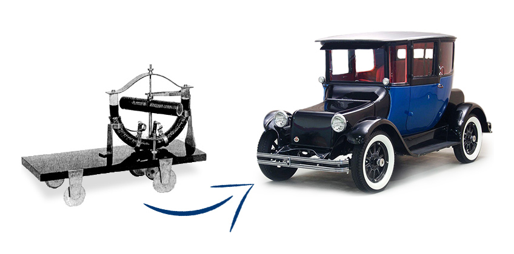
Слева – “электроскейт” 1828 года, с которого началась первая эпоха электромобилей, а справа – Detroir Electric Model 98FD 1929-35 годов, на котором эпоха закончилась
Однако всего через 15 лет, в 50-тых годах XX века, мировое сообщество снова вспомнило об электромобилях как о разумной и приемлемой альтернативе бензиновым и дизельным автомобилям. Тогда-то и начался второй подъем в индустрии электромобилей, который, к слову, длится по сей день.
В 1950-х годах было два основных фактора, которые заставили общество обратиться к электромобилям снова:
- постоянный рост цен на нефтепродукты из-за стремительно растущего спроса на топливо. Компании, которые добывали и перерабатывали нефть, специально завышали цены, понимая, что мировая промышленность не сможет обойтись без регулярных поставок топлива;
- экологическая ситуация в мире. В 50-х годах мир впервые задумался о влиянии деятельности человека на окружающую среду.
- В первую очередь специалисты обратили внимание на автомобильную индустрию, которая уже тогда росла бешеными темпами и потребляла топлива гораздо больше других отраслей промышленности. Тогда-то люди и вспомнили об электромобилях и их преимуществах над автомобилями с ДВС.
Первые попытки вернуть электромобили на рынок (1947-1961 года)
Нельзя сказать, что все время с 1910-х по 1950-е годы индустрия электромобилей никак не развивалась – отдельные компании выпускали мелкие партии электромобилей в надежде если не возродить, то хотя бы не дать умереть индустрии электрокаров.
Одна из таких компаний-мечтателей – японская авиакомпания Tachikawa Aircraft, которая в 1947 году начала выпуск автомобиля TAMA (мы уже упоминали о нем в прошлой статье) и за три года продала больше 1100 электромобилей.
Именно TAMA считается прародителем всех электромобилей Nissan. Логичный вопрос: “А причем здесь Nissan?” Все просто – в 1966 году компании Tachikawa Aircraft официально стала членом корпорации Nissan. К слову, за несколько лет до этого руководство Tachikawa Aircraft закрыло все проекты, связанные с авиацией, и переключило внимание на электромобили.
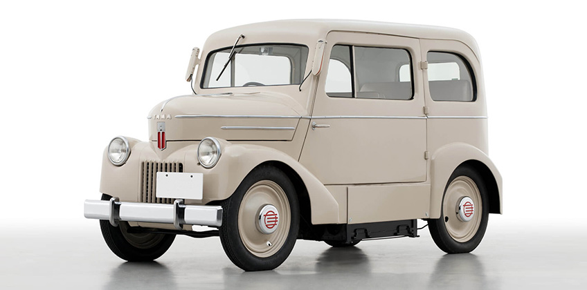
Электромобиль TAMA – прародитель культового Nissan LEAF
Японцы не были одиноки в стремлении к электрической мечте. В 1956 году инженеры компании National Union Electric Company совместно со специалистами фирмы Henney Coachworks начали разрабатывать электромобиль на базе популярного в то время Renault Dauphine. В период с 1956 по 1959 года они закупили 100 “реношек” под переоборудование. В 1959 году мир увидел первый электрический Renault Dauphine, который назывался Henney Kilowatt.
Свой вклад в разработку Henney Kilowatt сделал и американский ученый и инженер Виктор Воук – он разработал для новенького электрокара контроллер скорости.
Интересные факты о Викторе Воуке:
- электромобили Henney Kilowatt не были последними в карьере изобретателя. В течение следующих лет он успешно работал над новыми электромобилями и гибридными авто, а также активно популяризировал идею внедрения электромобилей в массы;
- одним из самых известных и успешных проектов ученого стал гибридный Buick Skylark, за который изобретателя прозвали “дедушкой американских электрокаров и гибридов”;
- ученый был участником комитетов IEC (сейчас Международная электротехническая комиссия) и ISO (сейчас Международная организация по стандартизации), современные версии которых выдают сертификаты качества и устанавливают стандарты для производителей не только электромобилей, но и других видов транспорта.
В разработке электромобиля также принимали участие специалисты компании Eureka Williams Company, которые собирали электрическую часть автомобиля. К слову, основной специализацией Eureka Williams Co было производство… пылесосов.
Первые электромобили Henney Kilowatt были оборудованы 3-мя аккумуляторами по 12В, благодаря чему автомобиль разгонялся до 64 км/час и мог проехать до 70 километров без дозарядки. Но разработчики электромобиля быстро поняли, что этого мало, чтобы достойно конкурировать с бензиновыми автомобилями.
Поэтому в 1960 году Henney Kilowatt получил более мощный электромотор и 6 аккумуляторов по 12 В. Максимальная скорость концепта выросла до 97 км/час, а запас хода на одном заряде – до 100 километров.
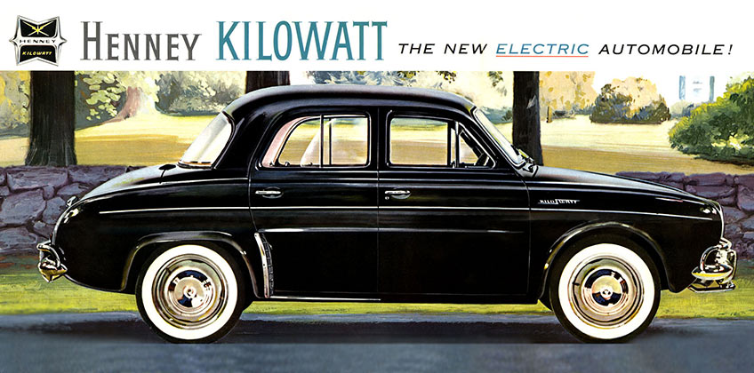
Реклама 72-х вольтового Henney Kilowatt в одной из местных газет, 1960 год
Машина стоила 3600 $, что было непомерно дорого. Поэтому компания National Union Electric Co продала только 47 электромобилей, из которых 32 Henney Kilowatt купили энергетические компании, а остальные 15 авто попали в частные коллекции.
В 1961 году производство Henney Kilowatt прекратилось, а спустя еще 13 лет фирму National Union Electric Co поглотила шведская компания AB Electrolux.
Электромобили времен двух нефтяных кризисов (1967-1982 года)
Непомерные цены на бензин и два нефтяных кризиса 1973 и 1979-80 годов были на руку разработчикам электрокаров. Еще в 1967 году американские компании AMC (American Motors Corporation) и Gulton Industries совместными усилиями разработали и выпустили экспериментальный электромобиль AMC Amitron.
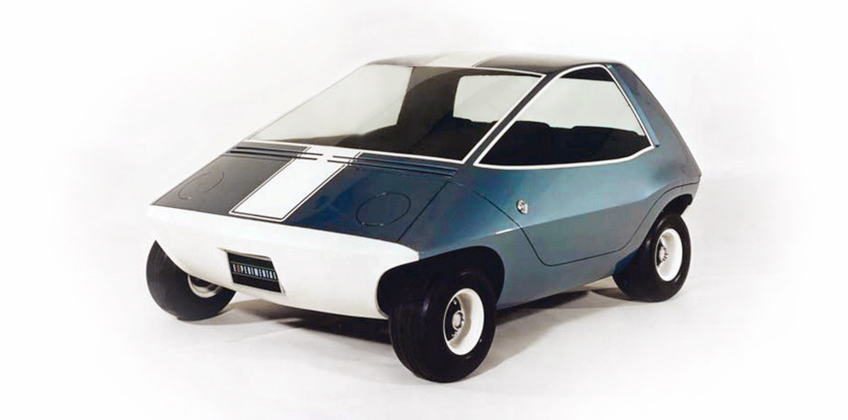
Электромобиль AMC Amitron
Это был компактный автомобиль – всего 2,16 метра в длину и весом 499 килограммов. Благодаря двум литиево-флюоридным батареям и двум 11-килограммовым никеле-кадмиевым аккумуляторам электромобиль мог проехать до 240 километров (!) на одном заряде. Максимальную скорость 80 км/час Amitron набирал за 20 секунд, что по меркам того времени было очень даже неплохо.
Все было хорошо в этом автомобиле, кроме цены. Да еще и “Большая тройка” (Ford, GM и Chrysler) наступал на пятки. В результате компания AMC в конце 1967 года свернула производство Amitron, но попытки сделать конкурентоспособный электромобиль не оставила.
В 1969 году компания начала выпускать электрическую модификацию Rambler American. Бензиновая версия этого автомобиля была очень востребована – только в период с 1958 по 1969 года выпустили несколько десятков модификаций. Руководство компании AMC решило: раз уж бензиновая версия нравится покупателям, то они полюбят и электрический аналог.
Но и эта попытка не увенчалась успехом, и в конце 1969 года American Motors Co свернула производство электромобилей и на следующие 8 лет вернулась на “бензиновый” путь.
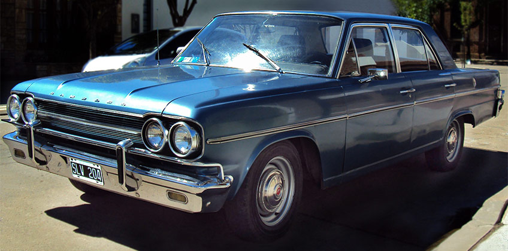
Электрический Rambler American 1969 года
В начале 1970-тых годов в моду вошли электрокары с угловатыми, рублеными корпусами, которые больше походили на луноходы, а не автомобили.
Например, итальянский двухместный, малогабаритный Zagato Eclar от компании Eclar Corporation, который выпустили тиражом 500 экземпляров. Или Enfield 8000 от британской компании Enfield Automotive. Электромобиль получился не таким угловатым, как итальянский предшественник, но все равно больше смахивал на рисунок 4-х летнего ребенка, а не полноценный автомобиль.
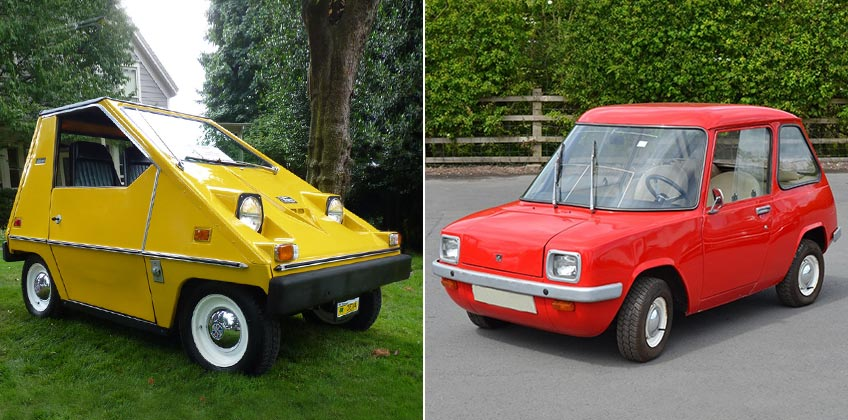
Слева – итальянский Zagato Eclar 1970 года, справа – британский Enfield 8000 1974 года
Enfield 8000 был рассчитан на двух пассажиров – хотя, судя по количеству места в машине, второе место скорее всего предназначалось для собаки-штурмана. А еще он был абсолютно непримечательным: электромотор на 8 “лошадок” (6 кВт) и обычные свинцово-кислотные аккумуляторы, которые давали небольшой запас хода – всего 70 километров на одном заряде. Максимальная скорость 64 км/час. С 1973 по 1977 года компания продала всего 120 экземпляров.
Единственный выдающийся факт об этом авто: ценитель автомобильной классики американец Джон Смит проапгрейдил старенький Enfield 8000 1974 года выпуска и засунул в него 500-сильный электромотор (!). Получившийся “монстрик” проезжает четверть мили за 12,62 секунды и за это время развивает скорость 101,65 миль/час или 163,6 км/час.
Electric Enfield 8000 с электромотором на 500 лошадиных сил
Главным конкурентом электромобилей Enfield 8000 и Eclar был концепт CitiCar от американской компании Sebring-Vanguard Inc., который выпускали с 1974 до 1977 года. Компания заняла 6-е место в списке самых крупных производителей автомобилей в Америке после GM, Ford, Chrysler, AMC и Checker Motors Co, выпустив 2300 авто.
Первая модель CitiCar получила название SV-36 за аккумулятор на 36В. Электромобиль был оборудован электромотором на 2,5 лошадиных силы. Следующая версия CitiCar получила более мощный мотор на 3,5 лошадиных силы, аккумулятор на 48 В и название SV-48. Третий вариант оригинального CitiCar был выпущен в 1976 году под названием Transitional CitiCar. Последняя версия отличалась от предыдущих 6-сильным электромотором и более аккуратным дизайном.
Технические характеристики оригинальных CitiCar постоянно улучшалась. Максимальная скорость первой версии была 48 км/час, второй – 61 км/час, а третьей – 80 км/час. Запас хода у всех модификаций был одинаковый – 64 километра без подзарядки.
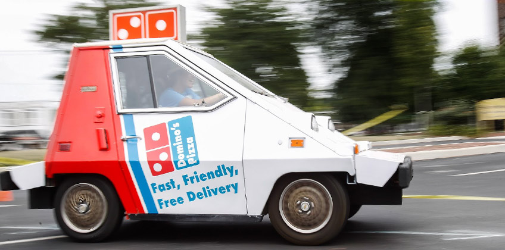
Даже в наше время находятся люди, которые получают истинное удовольствие от езды на электромобилях CitiCar
В 1979 году компанию Sebring-Vanguard Inc. купил другой американский производителей электромобилей Commuter Vehicles Inc. Новообразовавшаяся компания продолжила выпускать электромобили CitiCar. С 1979 по 1982 года вышло две новых модели – Comuta-Car и Comuta-Van, и за три года продали 2144 электромобиля.
Суммарно с 1974 по 1982 года в мире было продано 4444 электромобилей CitiСar и его модификаций. Во второй половине XX века такими объемами выпуска электромобилей не могла похвастаться ни одна компания. Но до рекорда компании Anderson Electric Car Company, которая с 1907 по 1939 год продала 13 тысяч электромобилей Detroit Electric, компаниям Sebring-Vanguard Inc. и Commuter Vehicles Inc. было еще очень далеко.
К слову, первой компанией, которая превзошла рекорд Anderson Electric Car Company и отметку в 13 тысяч проданных электромобилей, стала… Nissan Motor Company. Но об этом мы расскажем в следующий раз.
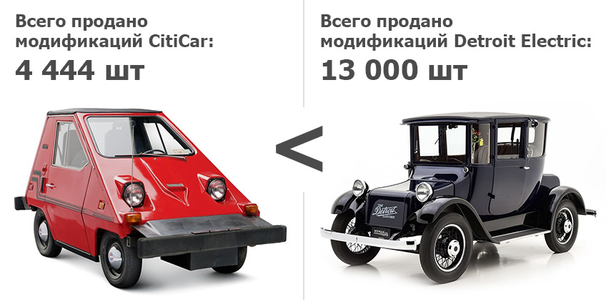
По крайней мере, они старались...
В 1977 года на рынок электромобилей вернулась компания AMC с обновленным Amitron, который получил название AMC Electron. Главное отличие от предыдущей неудачной версии заключалось в… зеркалах заднего вида.
Да-да, инженерам AMC и Gulton Ind. понадобилось десять лет, чтобы понять: Amitron не стал популярным, потому что у него не было зеркал заднего вида! Вся остальная начинка новому электромобилю перешла от предшественника. Само собой, результат не оправдал ожиданий и “обновленный” Electron даже не дошел до серийного производства. Так что, старичок Amitron оказался успешнее своего наследника.
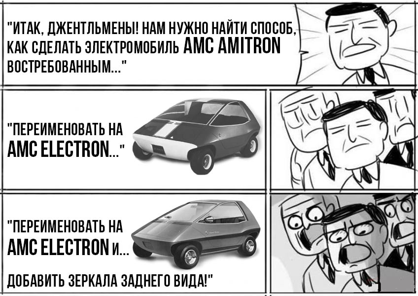
Нам кажется, процесс разработки AMC Electron выглядел именно так
В начале 80-тых годов XX века еще одна американская автомобильная компания Bradley Automotive начала выпуск собственных электромобилей. В 1980 году на рынке появился первый Bradley GTE – электромобиль на шасси Volkswagen Beetle. Bradley GTE – модификация бензинового Bradley GT II, который увидел свет 4-мя годами ранее.
Электромобиль оборудовали электромотором на 20,7 лошадиных сил (15,5 кВт) и 16-тью аккумуляторными батареями на 6В каждая. А еще установили батарею на 12В, которая отвечала за работу фар, стеклоочистителей и других электронных приборов. Всего было выпущено 50 экземпляров GTE.
Bradley GTE весил 1315 килограммов, был обтекаемой формы с дверцами, которые открывались вверх и напоминали крылья птицы. У электромобиля была два режима работы – “Cruis” и “Boost”. В режиме “Cruis” водитель получал плавную и размеренную езду с максимальной скоростью 88,5 км/час. В режиме “Boost” электрокар набирал “сотню” за 8 секунд и разгонялся до максимальных 120,7 км/час.
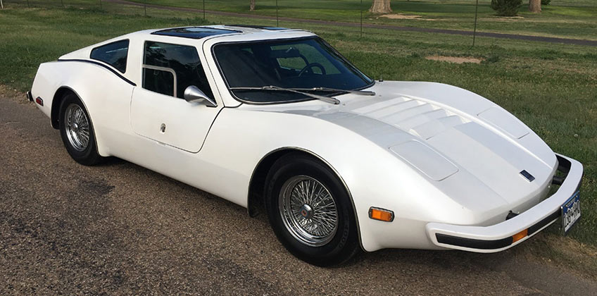
Bradley GTE – один из первых электромобилей второй половины XX века, который перестал напоминать геометрические фигуры на колесах
В 1980 году закончился второй энергетический кризис, недостатки бензиновых авто перестали быть такими уж недостатками, и про электрокары постепенно забыли. По крайней мере, до следующего энергетического кризиса 1990-1991 годов.
Электромобили конца XX века. Первые серьезные успехи со времен Detroit Electric
Третий энергетический кризис 1990-1991 годов не был таким страшным, как два предыдущих, но на развитие индустрии электромобилей повлиял.
Энергетический кризис начала 90-х сопровождался по-настоящему серьезными признаками экологической катастрофы. Это заставило разработчиков автомобилей всерьез взяться за электромобили.
Первыми всполошились американцы, а точнее калифорнийцы – в начале 90-х штат неоднократно признавали самым загазованным в США. В результате в Калифорнийском Комитете Воздушных Ресурсов (CARB – аббревиатура, англ.) приняли решение: до 1998 года увеличить количество автомобилей на экологически чистом топливе до 2% от общего количества транспортных средств, а к 2003 году – до 10%.
В 1992 году на территории штата начала действовать налоговая скидка в 1000 долларов для владельцев электрических автомобилей. А спустя еще 2 года эта же льгота начала работать на территории еще 12 американских штатов.
В результате только в 1997 году в Калифорнии продали более 5500 электромобилей разных марок, большинство из которых раскупили представители голливудской богемы.
Самым популярным электромобилем, который продавали на территории Калифорнии, стал EV1 – детище монстра американского автопрома General Motors. Концепт EV1 появился еще в 1990 году, а серийный выпуск 2-х местного электромобиля стартовал спустя 6 лет и продлился до 1999 года. За период с 1996 по 2003 года компания продала 1117 экземпляров EV1.
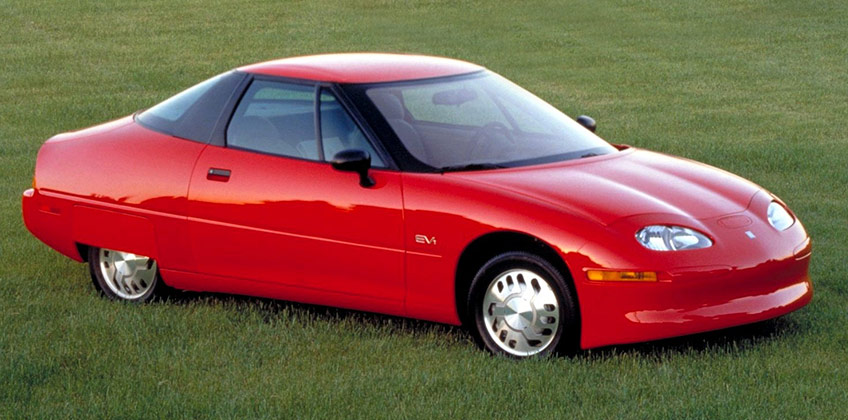
“Electric Vehicle 1” или просто EV1, 1996 год
Стоил EV1 от 34 000 $ до 44 000 $ – цена автомобиля зависела от технических характеристик. Например, модификации EV1 со свинцово-кислотными аккумуляторами стоили от 34 000 $ до 38 000 $ и проезжали на одном заряде батарей 90-120 километров. А версии электрокара с никель-металлгидридными батареями стоили от 38 000 $ до 44 000 $ и могли проехать без подзарядок до 240 километров.
Скоростные показатели у разных версий электромобилей были идентичные: максимальная скорость – 129 км/час, разгон до сотни – 9,5 секунды. К слову, это был один из первых автомобилей в мире, на котором стоял ограничитель скорости. В 2003 году, под предлогом окончания срока службы аккумуляторов, General Motors отозвала и уничтожила все проданные EV1. Две уцелевшие модели стали экспонатами американских автомобильных музеев.
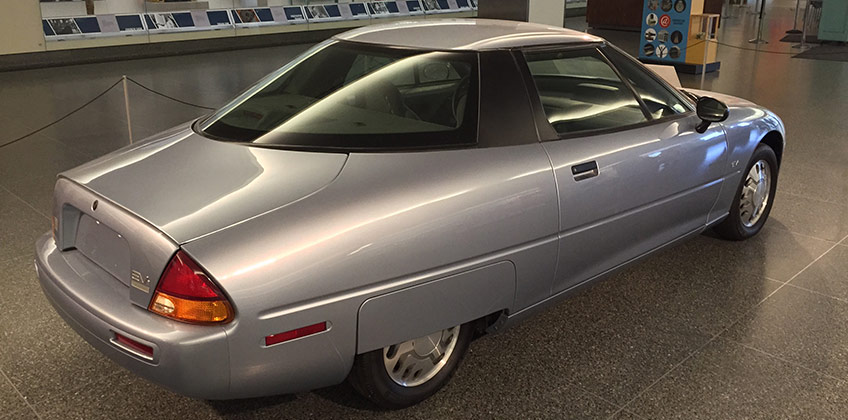
Один из двух уцелевших электромобилей EV1 в Национальном Музее Американской Истории
На самом деле последнее десятилетие XX века оказалось очень урожайным на различные электромобили, которые выпускали как крупные автомобильные компании, так и небольшие фирмы.
В 1992 году подразделение Ford Europa начало производство небольшого электрического фургона Ford Ecostar с 75-сильным мотором.
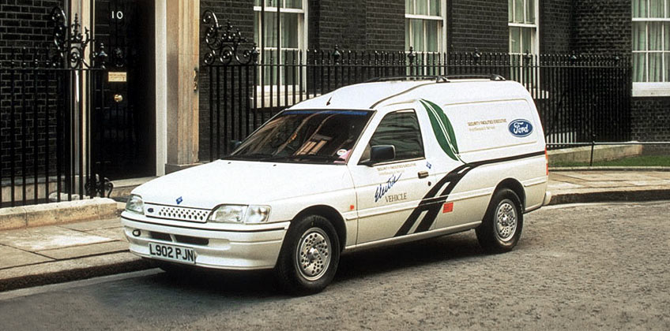
Ford Ecostar на одной из улиц Лондона, 1992 год
С 1992 по 1993 года собрали 100 электромобилей Ford Ecostar и тестировали их до конца 1996 года. Но дальше тестовых заездов дело не пошло, и вот почему:
- сера, которую использовали в аккумуляторах, легко воспламенялась. Дважды во время зарядки аккумуляторы просто взорвались;
- электромобиль стоил, как яхта, – 250 тысяч долларов. При чем стоимость батарей составляла пятую часть от полной цены, плюс, ручная сборка;
- в 1997 году компания Ford представила на рынке новую разработку – топливные ячейки для автомобилей. Совместный проект с Daimler-Benz и Ballard Power Systems поставил крест на всех экспериментах с натрий-серными аккумуляторами.
Volkswagen решил не отставать от электромоды и в 1995 году запустила производство собственных электромобилей CityStromer на основе бензиновых VW Golf и VW Jetta. В электромобилях VW были установлены свинцово-кислотные аккумуляторы, которые давали небольшой запас хода в 50-90 км. При этом электромобили Volkswagen были довольно шустрыми и разгонялись до 100 км/час.
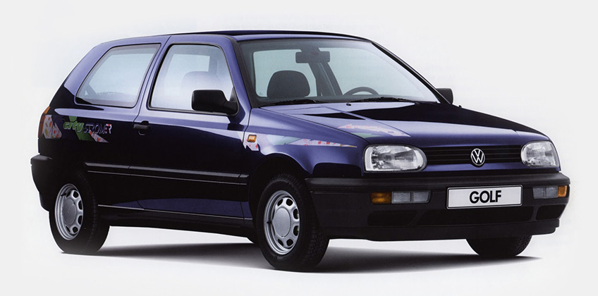
Реклама VW Golf CityStromer, 1995 год (надпись внизу гласит: “СитиСтромер. Гольф-электромобиль”)
Вообще, какими-то уникальными характеристиками отличались, в основном, детища малоизвестных производителей. Например, в 1995 году американская автомобильная компания Renaissance Cars выпустила и продала 25 электромобилей Tropica Roadster. Автомобиль не мог похвастаться выдающимися скоростными показателями, зато все его 12 аккумуляторов заряжались всего за 90 минут.
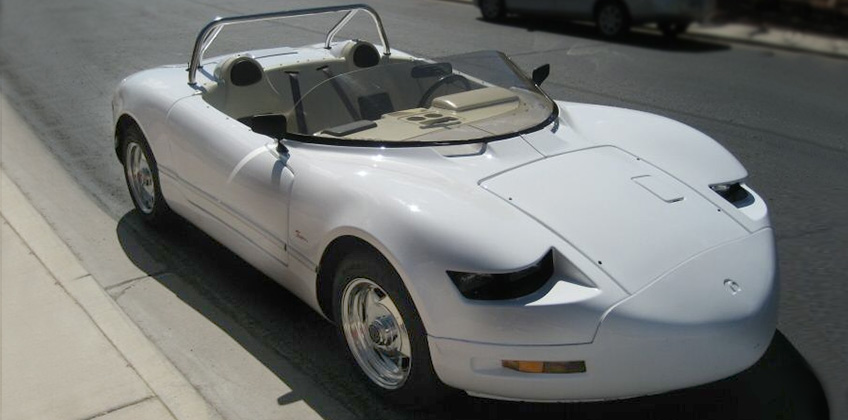
Внешне Tropica Roadster действительно был похож на спортивное авто, но только внешне
А электрокар Solectria Sunrise от компании Solectria Corporation разгонялся до сотни за 17 секунд и мог проехать 604 км без подзарядки – как на конкурсе American Tour de Sol. Автомобиль прошел несколько дорожных проверок, таких как поездка от Бостона до Нью-Йорка. Электромобиль проехал расстояние 349 километров без подзарядки со средней скоростью 85 км/час.
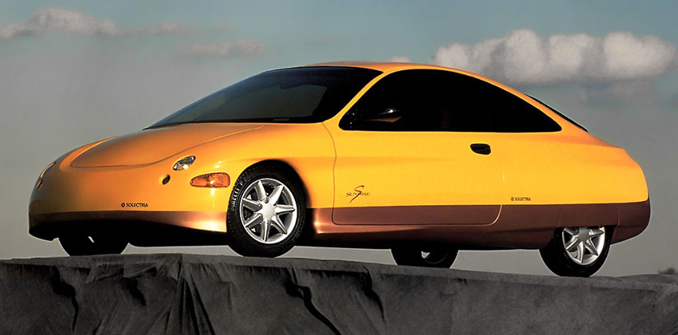
Solectria Sunrise – вкусная конфетка в странной обертке
За год работы инженеры компании Solectria Corporation собрали несколько опытных образцов, каждый из которых прошел все необходимые тесты и проверки, но в серийное производство так и не попал. А жаль – электромобиль хоть и выглядел немного странно, но по техническим характеристикам Solectria Sunrise мог заткнуть за пояс многие современные электрокары.
1997 год оказался насыщенным для рынка электромобилей. Вначале французская компания Renault представила на рынке собственный электромобиль Clio Electrique. Автомобиль имел те же скоростные характеристики, что и VW Golf CityStromer (максимальная скорость – 100 км/час), но вот дальность поездки на одном заряде батареи была выше у “француза” – до 100 километров против 50-90 километров у “немцев”.
За французами последовала японская компания Nissan, которая выпустила первый в мире электромобиль с литий-ионными аккумуляторами. Электрокар получил название Nissan Prairie Joy EV. Это был 5-ти дверный 4-х местный минивэн. Поначалу многие автомобильные эксперты считали, что из-за большой цены литий-ионные аккумуляторы не приживутся на рынке. Это мнение было ошибочным и сейчас будущее электромобилей связывают именно с литий-ионными аккумуляторами.
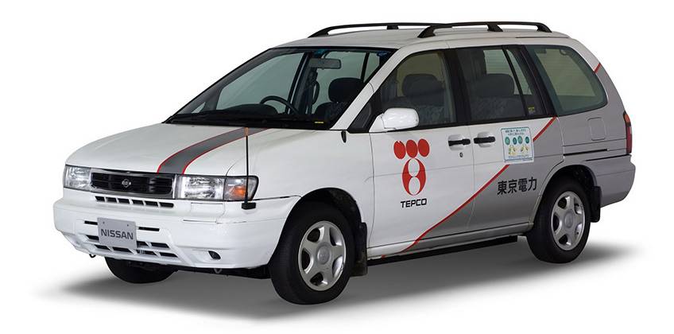
Nissan Prairie Joy EV 1997 года
В этом же году компания General Motors выпустила грузовой электропикап Chevrolet S10 EV. Он разгонялся до 118 км/час и мог проехать без дозарядки 144 километра. Производство свернули в 1998 году из-за низкого спроса на автомобиль.
А ближе к концу 1997 года активизировался главный конкурент Nissan на азиатском рынке – Toyota Motor Corp. Японцы начали выпускать и продавать электрическую версию Toyota RAV4 – RAV4 EV. Максимальная скорость кроссовера составила 125 км/час. Электромобиль мог проехать 140 километров без единой подзарядки. Японец RAV4 EV пользовался хорошей популярность, и его выпускали до 2002 года.
В 1998 году компания Ford снова вернулась в индустрию электромобилей, представив на рынке пикап-внедорожник Ford Ranger EV. Эта попытка оказалась гораздо успешнее чем в случае с Ford Ecostar. Внешне новый электромобиль был точной копией обычного Ford Ranger за исключением радиаторной решетки, на которой находился закрытый люком порт для зарядки аккумулятором.
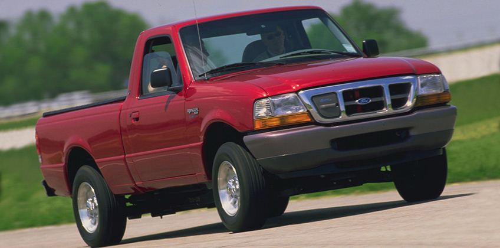
Ford Ranger EV 2002 года (на радиаторной решетке слева отчетливо виден лючок зарядного порта)
Первые версии 1998 года были оборудованы привычными свинцово-кислотными аккумуляторами, а в дальнейшем их заменили на никель-металлгидридные батареи. Производство Ford Ranger EV длилось до 2002 года.
Вторая половина XX века стала переломным временем для всей автоиндустрии – на рынке каждый год появлялись новые электромобили, которые уверенно конкурировали с транспортными средствами с ДВС.
Есть один интересный факт об электромобилях второй половины XX века, который связан с рулевым управлением этих автомобилей. Рулевое управление практически всех электромобилей было оборудовано электроусилителями. Чаще всего в электрокарах стояли рулевые колонки с ЭУР, а электрические рулевые рейки начали пользоваться популярностью только под конец XX века.
К слову, вторая половина XX века запоминалась не только постоянно растущей популярностью электромобилей, но также интересными рекордами и занимательными событиями, связанными с электрокарами.
Электромобили-рекордсмены. Кто был “быстрее, выше и сильнее” во второй половине XX века?
Одним из знаковых моментов второй половины XX века стал рекорд скорости среди электромобилей, который 23 августа 1974 года поставил гонщик Роджер Хедланг на электроболиде Battery Box. Место заезда – соленое озеро Бонневиль длиной 175 км и шириной 80 км в штате Юта.
После нескольких неудачных заездов, Роджеру наконец-то удалось разогнать электрокар до умопомрачительной скорости – 281 км/час (!). Сладкий вкус победы не смогли перебить ни соленая пыль, ни неудачные попытки.
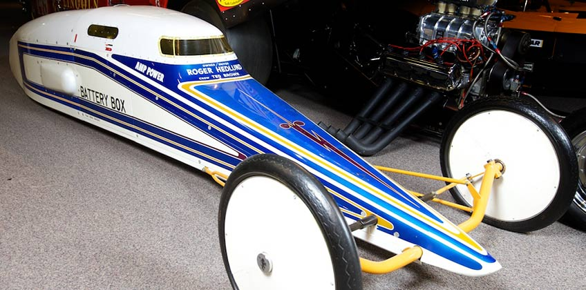
Battery Box – один из первых драговых электромобилей за всю историю драгрейсинга (гонок на четверть и пол мили)
Рекорд Роджера Хедланга продержался 20 лет. В 1994 году неизвестный водитель-испытатель компании General Motors разогнал усовершенствованную версию электрокара EV1 – Electric Vehicle 1 Impact до 295,832 км/ч. Этот рекорд скорости стал абсолютным для всех электромобилей XX века.
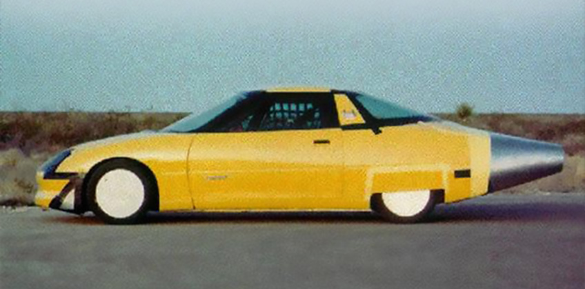
EV1 Impact – самый быстрый электромобиль XX века (к сожалению, фото лучшего качества нам найти не удалось)
А рекорд по запасу хода на одном заряде батарей среди всех электромобилей XX века принадлежит концепту Solectria Sunrise от компании Solectria Corp. Мы уже упоминали этот автомобиль ранее, но не внести ее в список рекордсменов мы просто не могли. Напомним, что во время одного из заездов электромобиль Solectria Sunrise проехал 604 километра без дозарядки. На фоне этого даже Tesla Model S со своими 539 километрами не кажется такой уж крутой.
Первые электромобили в космосе
Наверное, каждый слышал, что Tesla Roadster, выпущенная с борта Falcon Navy, приближается к Марсу. Многие считают, что именно этот автомобиль стал первым электрокаром, который бороздил космическое пространство. Но как бы не так.
Самое первое электрическое транспортное средство в космосе – это… советский “Луноход-1”. Да-да, именно луноход. Конечно, он не является электромобилем в обычном понимании этого слова, ведь он не возил людей. Но это не отменяет того, что “Луноход-1” был оборудован электромотором и солнечными батареями, которые регулярно подзаряжали аккумуляторы лунохода. Официальная дата “прилунения” советского лунохода – 17 ноября 1969 года.
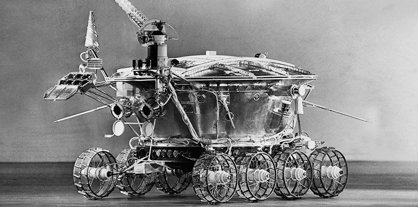
“Луноход-1” – советский R2-D2
А уже в 1971 году главный конкурент русских, американское космическое ведомство отправило на Луну первый в истории электрический внеземной автомобиль. Название этого чуда техники – Lunar Roving Vehicle или просто “лунный багги”. Электромобиль был рассчитан на двух пассажиров и мог проехать без подзарядки 92 км по лунной поверхности.
Лунный багги был оборудован электромотором на 0,25 лошадиных силы и двумя серебряно-цинковыми аккумуляторами по 121 ампер/час каждый. Оба шасси лунного электромобиля были ведущими, при чем задние и передние колеса поворачивались в разные стороны, чтобы уменьшить угол разворота “автомобиля”.
Электрический лунный багги принимал участие в трех космических экспедициях – Apollo-15 в июле 1971 года, Apollo-16 в апреле и Apollo-17 в декабре 1972 года. За все время эксплуатации астронавты проехали более 90 километров на этом чуде инженерной мысли.
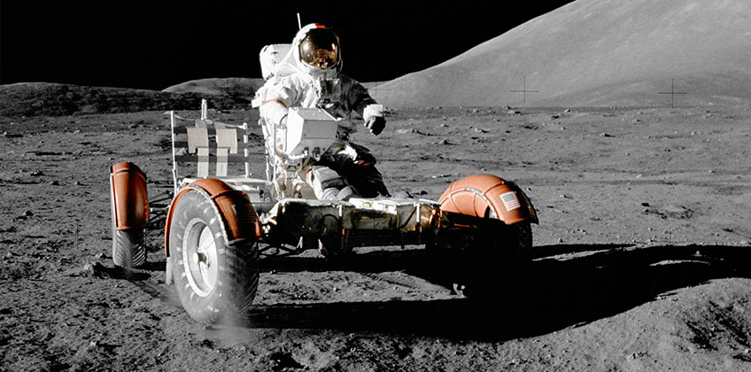
Lunar Roving Vehicle – первый настоящий электромобиль в космосе
Интересные факты о Lunar Roving Vehicle (“лунный багги”):
- электромобиль весил на Земле 210 килограммов. Так как на Луне сила притяжение гораздо слабее нашей, то и вес багги уменьшился больше чем в 5 раз. На Луне электромобиль весил всего 35 килограммов;
- колеса электромобиля состояли из алюминиевых дисков и покрышек, которые сплели из оцинкованной стальной проволоки и титановых полос вместо протекторов. Разработкой этих уникальных колес занималось две компании – Boeing и General Motors;
- во время миссии Apollo-17 один из космонавтов случайно повредил заднее правое крыло над колесом электромобиля. Поломка приносила сильные неудобства во время движения. Сломанный колесный щиток плохо защищал космонавтов от вездесущей и очень липучей лунной пыли, которая к тому же существенно ограничивала обзор. В результате щиток починили с помощью… пачки лунных карт и скотча.
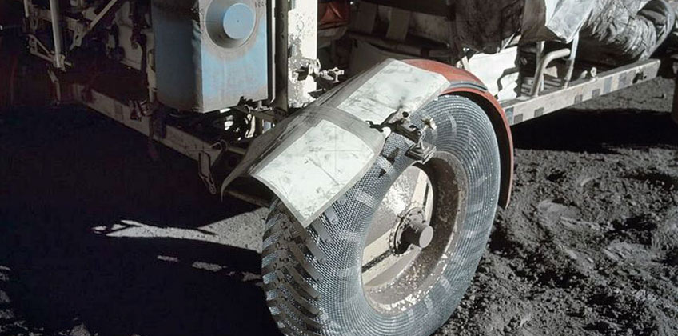
Скотч – самое надежное и крепкое изобретение человека (после синей изоленты)
К слову, Lunar Roving Vehicle до сих пор находится на Луне, правда уже в разряженном состоянии. Так что, если вы вдруг собираетесь на лунный пикник и не хотите топать на своих двоих, возьмите с собой парочку заряженных серебряно-цинковых аккумуляторов :)
А другую полезную информацию для автолюбителей вы можете узнать здесь.
По материалам сайта: https://steering.com.ua/blog/istoriya-elektromobilej-vtoroj-poloviny-xx-veka-123